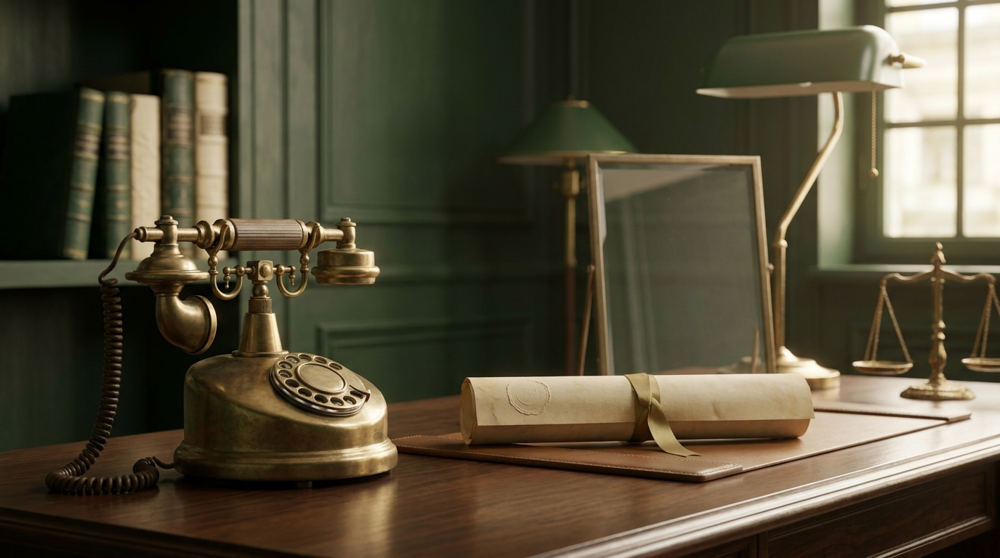

Telemarketing e numero univoco: verso la nullità dei contratti senza identificazione del chiamante
Si discute in Parlamento una misura che colpirebbe il telemarketing aggressivo: i contratti conclusi a seguito di chiamate prive di numero univoco identificativo potrebbero essere dichiarati nulli. La proposta è ancora in fase di esame e non vigente. Vediamo cosa prevede, quale sarebbe il fondamento giuridico e come muoversi, sia per le imprese sia per i consumatori.

Il contesto: una misura in fase di esame, non ancora vigente
Nelle ultime settimane è tornato al centro del dibattito parlamentare il contrasto al cosiddetto telemarketing selvaggio. La misura più discussa prevede che le chiamate commerciali debbano essere effettuate da numerazioni dotate di un numero univoco identificativo, tracciabile e riconducibile all'operatore.
È doveroso un chiarimento preliminare. Allo stato attuale si tratta di una previsione in corso di esame parlamentare (in sede di Commissione), non di diritto vigente. Le formule che circolano come definitive — "i contratti sono nulli" — descrivono un esito possibile, non una regola già in vigore. Finché non vi sarà l'approvazione e l'entrata in vigore, ogni effetto qui descritto va letto al condizionale. Invitiamo a verificare gli estremi normativi esatti del provvedimento al momento della sua eventuale pubblicazione, perché numero, articolato e disciplina transitoria sono ancora suscettibili di modifica.
Inquadramento normativo
Il telemarketing è già regolato da un quadro articolato. Il Registro Pubblico delle Opposizioni (D.P.R. 178/2010 e successive modifiche, da ultimo ampliato anche ai numeri di cellulare) consente di opporsi alle chiamate promozionali. La disciplina dei contratti a distanza è invece contenuta nel Codice del consumo (artt. 50 ss. e, in particolare, art. 51 del D.lgs. 206/2005), che impone obblighi di informazione e di conferma su supporto durevole.
Il punto delicato riguarda la natura della nullità prospettata. È bene non confondere due piani distinti:
- L'annullabilità (artt. 1427 ss. c.c.) riguarda i vizi del consenso — errore, dolo, violenza. Il contratto è valido finché non viene annullato su iniziativa del soggetto legittimato.
- La nullità (artt. 1418 ss. c.c.) deriva invece dalla violazione di una norma imperativa, indipendentemente da un vizio della volontà del singolo.
La misura in esame opererebbe sul secondo piano: l'eventuale nullità non discenderebbe da un consenso "viziato in radice", ma dalla violazione di un obbligo imperativo di trasparenza e identificazione del chiamante. Si tratterebbe, con ogni probabilità, di una nullità di protezione — azionabile a vantaggio del solo consumatore — o di una nullità virtuale ex art. 1418, comma 1, c.c. La distinzione non è teorica: cambia chi può farla valere, in quali termini e con quali effetti.
Implicazioni pratiche
Per le aziende di telecomunicazioni e gli operatori di call center, la conseguenza più rilevante sarebbe l'obbligo di adeguare l'intera filiera del contatto commerciale: numerazioni tracciabili, gestione documentata del consenso, verifica del Registro delle Opposizioni. Un contratto raccolto al di fuori di questi presidi rischierebbe di non produrre effetti.
Per i consumatori, la tutela sarebbe più incisiva: la nullità, a differenza dell'annullabilità, può di regola essere fatta valere senza termini di decadenza e travolge il contratto sin dall'origine. Resta però un punto da non trascurare: la nullità non opera in automatico. Occorre dimostrare la riconducibilità del contratto contestato alla chiamata irregolare. È un accertamento di fatto, da condurre caso per caso, sulla base delle prove disponibili (registrazioni, log delle chiamate, documentazione contrattuale).
La disciplina transitoria — quali contratti sarebbero interessati e da quale data — non risulta ancora definita. È un profilo da monitorare, perché determina l'ambito concreto di applicazione.
Cosa fare in concreto
Per le imprese:
- Mappate la filiera dei contatti commerciali e verificate la tracciabilità delle numerazioni utilizzate, anche dai fornitori esterni.
- Documentate la raccolta e la conservazione del consenso preventivo, con prova certa di data e contenuto.
- Aggiornate gli script e le procedure di identificazione dell'operatore in apertura di chiamata.
Per i consumatori:
- Conservate ogni elemento utile: numero chiamante, data, eventuali e-mail o SMS di conferma, copia del contratto.
- Iscrivete le vostre utenze al Registro Pubblico delle Opposizioni e segnalate le chiamate non conformi.
In entrambi i casi è opportuno un esame caso per caso, perché l'esito dipende dalla concreta riconducibilità del contratto alla chiamata contestata e dallo stato dell'iter normativo al momento della valutazione.
Disclaimer
Contributo informativo a cura di Tamburro & Partners - Avv. Giuseppe Tamburro. Non costituisce parere legale.
Ogni contratto ha il suo equilibrio.
Se vuoi una revisione delle clausole o una redazione su misura, scrivi allo studio. Ti rispondiamo entro un giorno lavorativo.